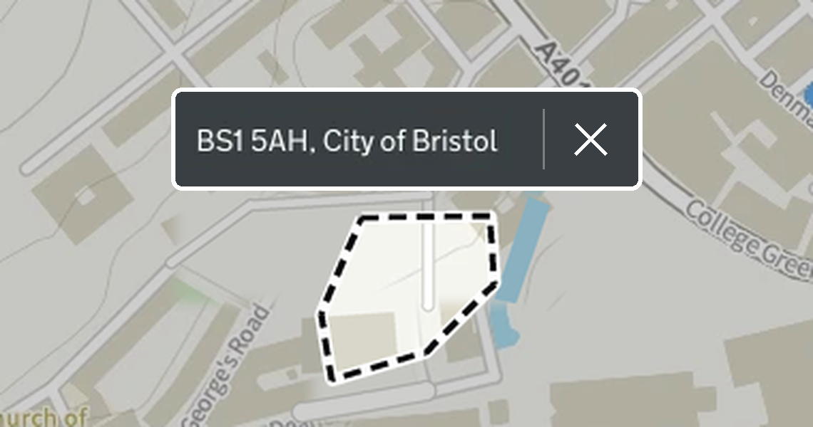
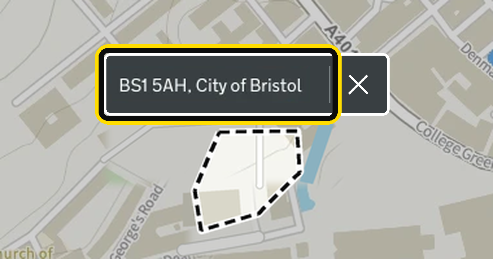
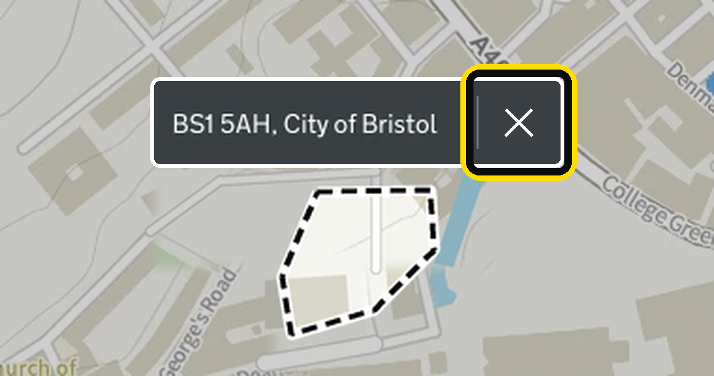

Close button inside the postcode label
A possible next iteration of the postcode outline design spec, to consider only if keeping the search open is not enough.
The design
A close button is joined to the right of the postcode label, rather than being a separate control elsewhere on the map. This makes the label 56 pixels wider (the 44 pixel button plus 12 pixels of space before it) and 9 pixels taller, so it covers slightly more of the map than the label alone.
- The button is a 44 by 44 pixel target, above the 24 by 24 pixel minimum in WCAG 2.2, to help users with dexterity issues and touch screen users. The label grows to 44 pixels tall to fit it
- The label keeps the main spec's style: white text on dark grey
#393f42, with a 2px white halo around the whole label including the button - A 14 by 14 pixel white cross icon with a 2px stroke, separated from the postcode text by a thin divider
- 12 pixels of space between the postcode text and the divider, so a focus ring on the close button never covers the text
- The button has an accessible name that includes the postcode, for example "Remove BS1 5AH outline"
- It is reached with the Tab key, and is always visible rather than only appearing on hover
- Selecting it removes the outline, tint and label, and also clears the search box, so the two stay in step
- After removal, focus moves to the search box so keyboard users are not left on a control that no longer exists

Image: images/01-label-close-button.png
Keyboard focus
The name label keeps its own focus stop and focus style from the main spec, and the close button is added as a second focus stop. Pressing Tab moves to the name label first, then to the close button. Each takes the focus style on its own, so it is clear which part is selected.
The focus style sits outside the white halo. Where the 2 parts meet, the focus style of the focused part sits on top of the other part, so the yellow ring and black border are visible the whole way round and never hidden behind the other part.
Name label focused
The focus style sits over the edge of the close button.

Image: images/02-label-name-focus-with-close-button.png
Close button focused
The focus style sits over the edge of the name label.

Image: images/03-label-close-button-focus.png
Things to consider
- Users would have 2 ways to remove the outline (clearing the search and the close button), so both must do exactly the same thing
- If research shows the label is not needed, this design would need a different place for the close button